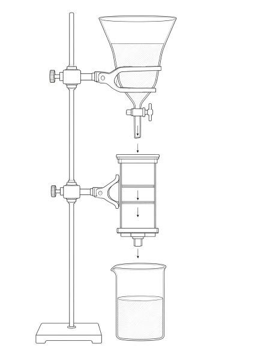

Рис. 1. Схема экспериментальной установки
Авторы:
Цель проекта:
Разработка и экспериментальное исследование прототипа лабораторной установки для очистки воды от нефтепродуктов с использованием кевларовой мембраны, перфорированной форстеритным лазером.
Задачи проекта:
Литература: